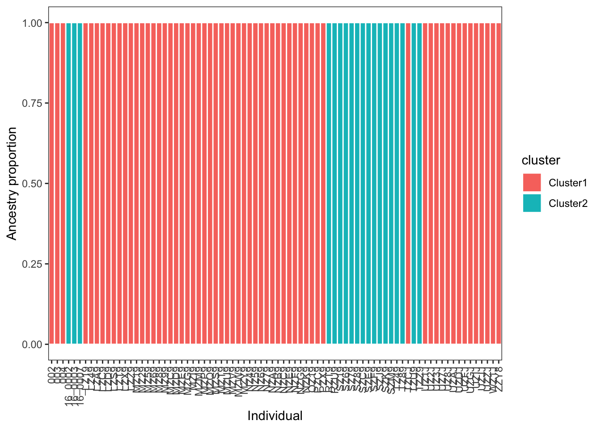
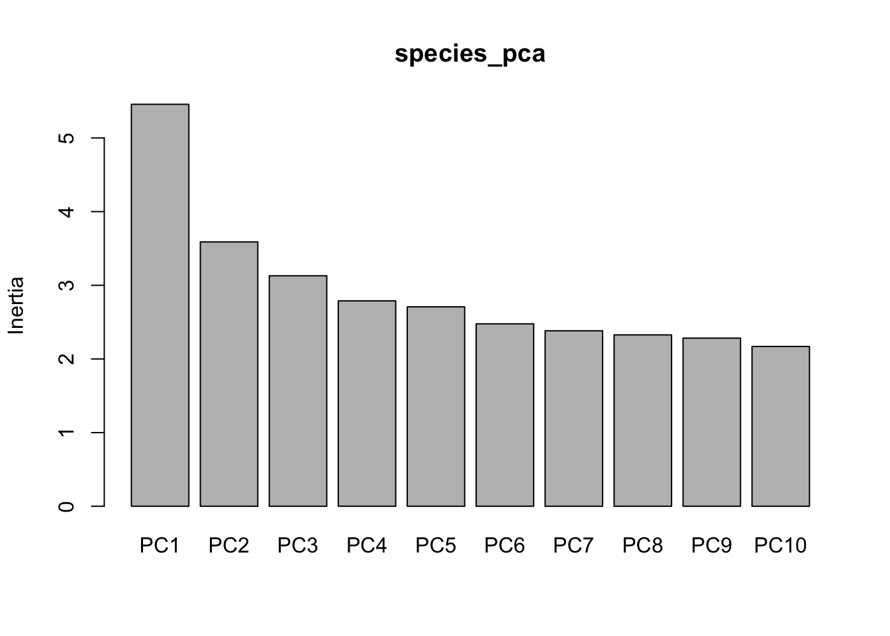
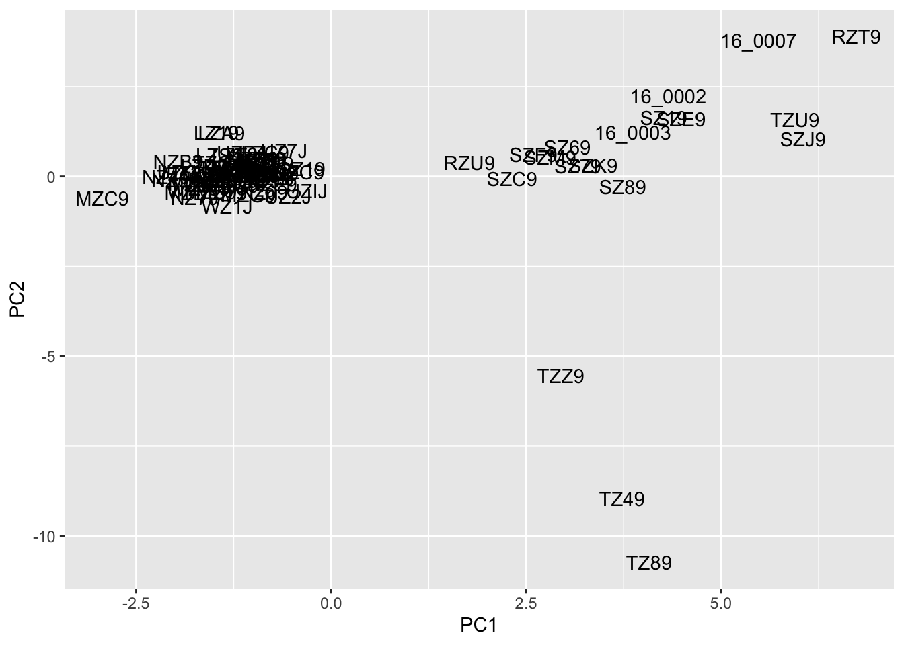
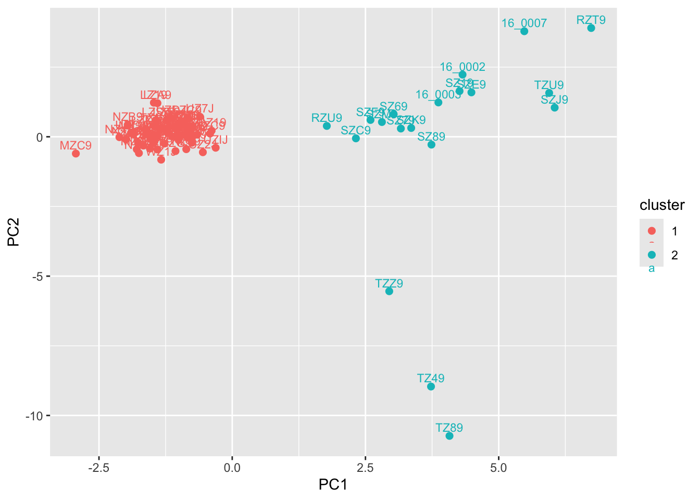
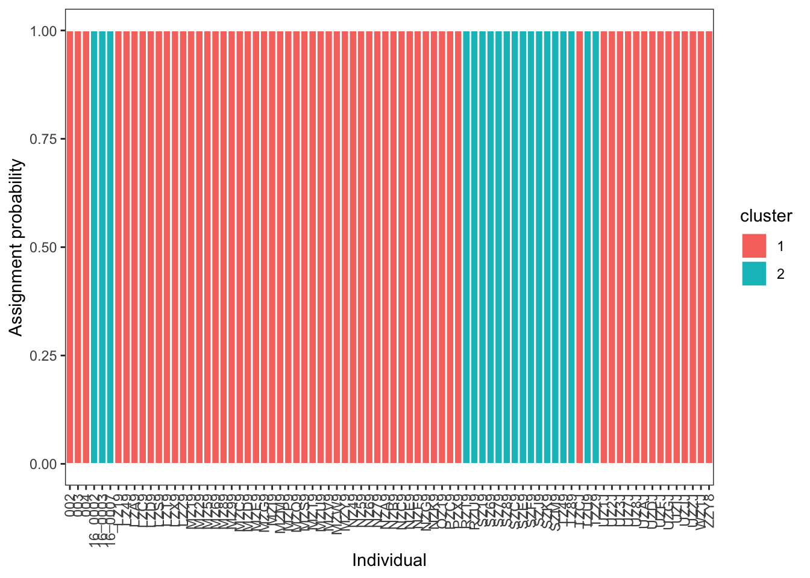
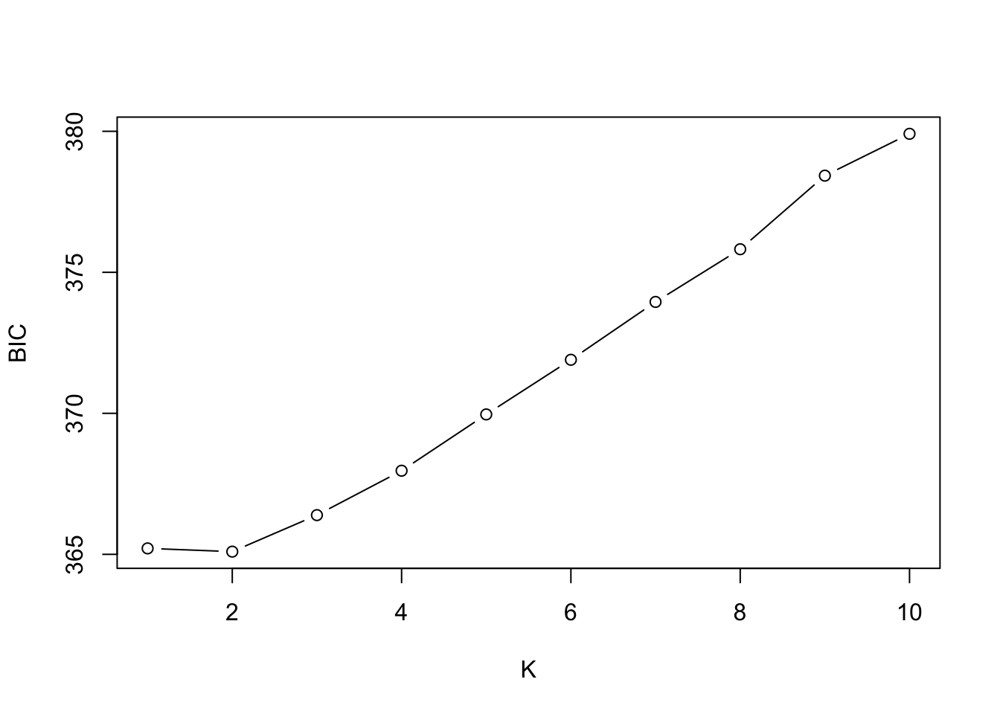

library(tidyverse)Describing Population Genetic Structure
A ubiquitous task in population and conservation genetics, systematics, and related fields is to inferring the presence and number of genetic clusters in a dataset—“clusters” being roughly equivalent to evolutionary populations, i.e. aggregations of randomly mating individuals—and then assigning individuals to these groups while accounting for uncertainty (often but not exclusively caused by mixed ancestry). Numerous statistical and machine learning approaches to this problem exist, each with their own strengths and weaknesses. The most famous of these programs is Structure, which has lent its name to the ubiquitous ancestry assignment bar charts it and its competitors produce. There are still many reasons to use Structure, but as its installation requires compilation from binary source files and it is not readily available as a Mamba environment, we will instead learn to run two alternatives: ADMIXTURE, a maximum likelihood implementation of model-based ancestry estimation, and principal components analysis (PCA) / discriminant analysis of principal components (DAPC), which have no underlying genetic model.
To do so, we will again work with empirical data. You may choose one of the following study systems:
- Dudley’s lousewort (Pedicularis dudleyi); paper here, data here
- Coho Salmon (Oncorhynchus kisutch); paper here, data here
- Northern and southern Idaho ground squirrels (Urocitellus brunneus and U. endemicus); paper here, data here
- Song Sparrow (Melospiza melodia); paper here, data here
- Northern Alligator Lizards (Elgaria coerulea); paper here, data here
- Common mudpuppy (Necturus maculosus); paper here, data here
Running ADMIXTURE
Like Structure, ADMIXTURE models the probability of observing the genotypes in your data given \(K\) populations with specific allele frequencies that contribue proportional ancestry to each individual. Allele frequencies and ancestry proportions (conditional on \(K\)) are simultaneously estimated. The programs differ in their optimization algorithm: Structure uses Markov Chain Monte Carlo chains to sample the posterior probability distribution of allele frequencies and ancestry proportions given input data, while ADMIXTURE maximizes the likelihood of observing your data given a set of populations, their allele frequencies, and ancestry proportions. As is typically the case with maximium likelihood inference, it is much faster than its MCMC-based alternative, making it both more practical for our course and allowing you to scale up in the maximum number of individuals and loci analyzed.
As per usual, we will install ADMIXTURE into a fresh Mamba environment:
name: admixture
channels:
- bioconda
- conda-forge
dependencies:
- admixture=1.3.0
- plink2mamba env create -f admixture.yamlYou will first need to convert a .vcf of your study system into a .bed file (more on that in a second). For convenience, I’ve downloaded at least one SNP dataset for each species listed above into ~/bioe-591-genomics/course-materials/data/structure_data/ and renamed them as something simple and recognizable. However, you may find that it is more satisfying to download a copy of these data from Dryad directly, as it will then come with additional context on its filtering, which individuals are included, and other details that will help you interpret your results. Either way, prepare an .sbatch script with an appropriate header and the following commands (adapted for your paths):
module load Mamba/23.11.0-0;
eval "$(conda shell.bash hook)"
conda activate admixture
plink2 \
--vcf /home/k14m234/bioe-591-genomics/course-materials/data/structure_data/species.vcf \
--allow-extra-chr \
--make-bed \
--out species
awk 'BEGIN{OFS="\t"} {if(!($1 in a)) a[$1]=++i; $1=a[$1]; print}' species.bim > species.int.bim
cp species.bed species.int.bed
cp species.fam species.int.famOnce run, this should produce a set of files with the prefix species and the suffixes .bed, .bim, .fam, and .log. You can read more about .bed files here; for now, it is sufficient to know they are binary (at least in plink2) and contain variant information in a simple, tab-delimited format. The following lines of awk and bash replace “chromosome” identifiers (usually just a locus or scaffold with your data) with integers that are compatible with ADMIXTURE, which expects standardized chromosome names that lack certain characters like underscores. Understanding the specifics here is not important—you should use the output with the string “int” before the suffix, as these are the modified files—but it is worth keeping in mind in case the fix above does not work and you recieve an error message to this effect.
Your next step is to run ADMIXTURE itself. Do so in a new .sbatch script (loading Mamba and making it callable as normal):
admixture --cv species.int.bed 2By typing ADMIXTURE into your terminal you will see its usage information: Usage: admixture <input file> <K>. The argument \(K\), you will recall, indicates the number of populations modeled. Here, entering 2 tells the program to estimate allele frequencies to characterize two distinct, randomly mating populations, and then maximize the probability of observing the genotypes in your .bed file by assigning proportions of each individual’s ancestry to one or both of these. Its primary output will be a plain text file with a name in the format species.K.Q (e.g., squirrels.2.Q). Within, \(K\) columns correspond to \(K\) populations, and individuals (rows) are assigned a proportion of their total ancestry to each. The second most output is (rather unfortunately) buried in the .log—a cross-validation score generated by hiding a fraction of genotypes, fitting the model on the remaining data, and attempting to predict those genotypes based on estimated ancestry proportions and allele frequencies. This score is important for comparing values of \(K\), which we will return to for homework.
Running ADMIXTURE typically involves many replicates of the same and different values of \(K\). Working to address the complications this produces (e.g., label switching among clusters) is beyond what we can reasonably cover (though I will provide some code to address this in a note below). However, it is useful to have the ability to visualize the results of a single run, and isolate the cross-validation score discussed previously. To do so, we will again work on an RStudio instance via Tempest Web. (If you’ve forgotten how to log on to this portal, last week’s lab has a primer; one or two hours of runtime should be sufficient.)
All we will need for this portion of the tutorial is tidyverse, which should already be loaded:
We will next read in a suite of files used or produced by ADMIXTURE (note this will again involve tweaking paths and filenames).
# read sample names and extract
fam <- read_table("data/species.int.fam",
col_names = FALSE,
show_col_types = FALSE
)
samples <- fam$X2 # individual IDs are usually column 2
# choose your K value (will be 2 for this demo)
K <- 2
# read Q matrix
q <- read_table("data/species.int.2.Q",
col_names = FALSE,
show_col_types = FALSE
)
# name the ancestry columns
colnames(q) <- paste0("Cluster", 1:K)
# combine with sample names
q_df <- q %>%
mutate(sample = samples) %>%
relocate(sample)
# convert to long format for ggplot
q_long <- q_df %>%
pivot_longer(
cols = starts_with("Cluster"),
names_to = "cluster",
values_to = "ancestry"
) %>%
mutate(sample = factor(sample, levels = samples))The ggplot function geom_col provides an easy way to plot your data:
# plot
ggplot(q_long, aes(x = sample, y = ancestry, fill = cluster)) +
geom_col(width = 1, color="white") +
theme_bw() +
labs(x = "Individual", y = "Ancestry proportion") +
theme(
panel.grid = element_blank(),
axis.text.x = element_text(angle = 90, vjust = 0.5, hjust = 1)
)
Lastly, we can make use of regex functions in R to extract our cross-validation values from the log file:
cv_df <- tibble(file = "data/admixture.out") %>%
mutate(
text = map_chr(file, read_file),
cv_line = str_extract(text, "CV error \\(K=\\d+\\):\\s*[-0-9.eE]+"),
K = str_match(cv_line, "CV error \\(K=(\\d+)\\)")[,2] |> as.integer(),
CV = str_match(cv_line, ":\\s*([-0-9.eE]+)")[,2] |> as.numeric()
) %>%
select(file, K, CV) %>%
arrange(K)
cv_df# A tibble: 1 × 3
file K CV
<chr> <int> <dbl>
1 data/admixture.out 2 0.374
TipReplicate ADMIXTURE runs
Applying ADMIXTURE to the same data and same value of \(K\) can lead to variable results due to random initialization of its maximum likelihood algorithm. Ideally, this variation is minor and does not impact your results, but it is nonetheless standard
for rep in {1..5}; do
admixture --cv species.int.bed 2 | tee log_K2_rep${rep}.out
doneIn the code above, five replicates of \(K\)=2 are run, saving the log to a unique file where you can later extract cross-validation errors with grep:
grep -h "CV error" log_K2*.outPCA and DAPC with adegenet
We will complement our model-based inference of ancestry proportions with a non-parametric approach: discriminant analysis of principal components, or DAPC. DAPC is easily implemented in adegenet, software you were introduced to in the previous lab. We will thus need to load a similar set of packages:
library(adegenet)
library(vcfR)We will again load our .vcf files and refromat them as geninds:
vcf <- read.vcfR(file = "data/species.vcf", verbose = TRUE)Scanning file to determine attributes.
File attributes:
meta lines: 12521
header_line: 12522
variant count: 4227
column count: 89
Meta line 1000 read in.
Meta line 2000 read in.
Meta line 3000 read in.
Meta line 4000 read in.
Meta line 5000 read in.
Meta line 6000 read in.
Meta line 7000 read in.
Meta line 8000 read in.
Meta line 9000 read in.
Meta line 10000 read in.
Meta line 11000 read in.
Meta line 12000 read in.
Meta line 12521 read in.
All meta lines processed.
gt matrix initialized.
Character matrix gt created.
Character matrix gt rows: 4227
Character matrix gt cols: 89
skip: 0
nrows: 4227
row_num: 0
Processed variant 1000
Processed variant 2000
Processed variant 3000
Processed variant 4000
Processed variant: 4227
All variants processeddna <- vcfR2DNAbin(vcf, unphased_as_NA = F, consensus = T, extract.haps = F)
species_genind <- DNAbin2genind(dna)
species_genind/// GENIND OBJECT /////////
// 80 individuals; 2,084 loci; 4,168 alleles; size: 2.3 Mb
// Basic content
@tab: 80 x 4168 matrix of allele counts
@loc.n.all: number of alleles per locus (range: 2-2)
@loc.fac: locus factor for the 4168 columns of @tab
@all.names: list of allele names for each locus
@ploidy: ploidy of each individual (range: 1-1)
@type: codom
@call: DNAbin2genind(x = dna)
// Optional content
- empty -To make PCA behave properly with genotype data, we need to find some way to treat missing data and center genotypes (i.e., make alternate homozygotes equivalent, not translate to numeric values of 0 or 2 based on their allele counts). We do so with the scaleGen() function, after which we can run PCA with the prcomp() function:
species_genind_scaled <- scaleGen(species_genind,NA.method="mean",scale=F)
species_pca <- prcomp(species_genind_scaled, center=F,scale=F)A “screeplot” displays the loadings of each principal component, indicating whether the majority of variation in your data can be captured on a single axisd or not:
screeplot(species_pca)
Standard practice for plotting is extract the first few PCs and add sample names to the resulting dataframe:
pc <- data.frame(species_pca$x[,1:3])
pc$sample <- rownames(pc)These data can be turned into the basis of a quick visualization. (Improving this plot is left as an exercise for the reader!)
ggplot(data=pc,aes(x=PC1,y=PC2))+
geom_text(aes(label=sample))
Before we apply DAPC, we need some sort of a priori group assignment. We can do this via \(K\)-means clustering—an unsupervised machine learning algorithm that partitions samples into distinct, nonoverlapping clsuters based on similarity in PC space—using adegenet’s built-in find.clusters() function:
grp <- find.clusters(species_genind, n.pca = 50, n.clust = 2)
grp$Kstat
NULL
$stat
NULL
$grp
002 003 004 16_0002 16_0003 16_0007 LZ19 LZ49 LZA9 LZC9
1 1 1 2 2 2 1 1 1 1
LZD9 LZS9 LZT9 LZX9 LZZ9 MZ19 MZ29 MZ59 MZ69 MZ89
1 1 1 1 1 1 1 1 1 1
MZ99 MZC9 MZD9 MZE9 MZG9 MZI9 MZM9 MZP9 MZQ9 MZS9
1 1 1 1 1 1 1 1 1 1
MZT9 MZU9 MZV9 MZW9 MZY9 NZ49 NZ59 NZ69 NZ79 NZA9
1 1 1 1 1 1 1 1 1 1
NZB9 NZC9 NZE9 NZF9 NZG9 NZK9 OZ19 PZC9 PZX9 RZT9
1 1 1 1 1 1 1 1 1 2
RZU9 SZ19 SZ69 SZ79 SZ89 SZC9 SZE9 SZF9 SZJ9 SZK9
2 2 2 2 2 2 2 2 2 2
SZM9 TZ49 TZ89 TZCJ TZU9 TZZ9 UZ1J UZ2J UZ3J UZ7J
2 2 2 1 2 2 1 1 1 1
UZ8J UZAJ UZDJ UZFJ UZGJ UZIJ UZJJ UZZJ WZ1J ZZY8
1 1 1 1 1 1 1 1 1 1
Levels: 1 2
$size
[1] 61 19We can visualize these clusters with a simply color aesthetic, which gives you unsurprising individual assignment:
pc$cluster <- grp$grp
ggplot(pc, aes(x = PC1, y = PC2, color = cluster)) +
geom_point(size = 2) +
geom_text(aes(label = sample), vjust = -0.5, size = 3) 
DAPC takes these hard-coded assignments and determines which principal components contribute to them, as well as any uncertainty in ancestry. (It is thus designed to discriminate on the basis of user-input populations, and should be used in combination with \(K\)-means clustering or other approaches for detecting and / or designating structure.)
dapc1 <- dapc(species_genind, pop = grp$grp, n.pca = 50, n.da = 2)
dapc1 #################################################
# Discriminant Analysis of Principal Components #
#################################################
class: dapc
$call: dapc.genind(x = species_genind, pop = grp$grp, n.pca = 50, n.da = 2)
$n.pca: 50 first PCs of PCA used
$n.da: 1 discriminant functions saved
$var (proportion of conserved variance): 0.775
$eig (eigenvalues): 2986 vector length content
1 $eig 1 eigenvalues
2 $grp 80 prior group assignment
3 $prior 2 prior group probabilities
4 $assign 80 posterior group assignment
5 $pca.cent 4168 centring vector of PCA
6 $pca.norm 4168 scaling vector of PCA
7 $pca.eig 79 eigenvalues of PCA
data.frame nrow ncol content
1 $tab 80 50 retained PCs of PCA
2 $means 2 50 group means
3 $loadings 50 1 loadings of variables
4 $ind.coord 80 1 coordinates of individuals (principal components)
5 $grp.coord 2 1 coordinates of groups
6 $posterior 80 2 posterior membership probabilities
7 $pca.loadings 4168 50 PCA loadings of original variables
8 $var.contr 4168 1 contribution of original variables The important part of this output are the posterior probabilities of ancestry assignments. We will extract these and turn it into a tibble with sample name, cluster, and ancestry probability:
q <- as.data.frame(dapc1$posterior)
q$sample <- rownames(q)
q_long <- q |>
pivot_longer(
cols = -sample,
names_to = "cluster",
values_to = "ancestry"
)
q_long# A tibble: 160 × 3
sample cluster ancestry
<chr> <chr> <dbl>
1 002 1 1 e+ 0
2 002 2 7.57e-39
3 003 1 1 e+ 0
4 003 2 1.04e-49
5 004 1 1 e+ 0
6 004 2 1.54e-46
7 16_0002 1 1.05e-47
8 16_0002 2 1 e+ 0
9 16_0003 1 2.19e-50
10 16_0003 2 1 e+ 0
# ℹ 150 more rowsThis can then be plotted in a comparable format to your ADMIXTURE results:
ggplot(q_long, aes(x = sample, y = ancestry, fill = cluster)) +
geom_col(width = 1, color = "white") +
theme_bw() +
labs(x = "Individual", y = "Assignment probability") +
theme(
panel.grid = element_blank(),
axis.text.x = element_text(angle = 90, vjust = 0.5, hjust = 1)
)
The final wrinkle we will address is how to compare results across different values of \(K\).
# identify clusters
grp_auto <- find.clusters(
species_genind,
n.pca = 50,
choose.n.clust = FALSE,
max.n.clust = 10,
stat = "BIC"
)
# print BIC values
grp_auto$Kstat K=1 K=2 K=3 K=4 K=5 K=6 K=7 K=8
365.2108 365.0958 366.3905 367.9647 369.9612 371.8986 373.9500 375.8181
K=9 K=10
378.4270 379.9109 # plot!
plot(
1:length(grp_auto$Kstat),
grp_auto$Kstat,
type = "b",
xlab = "K",
ylab = "BIC"
)
A full treatment of interpreting BIC values is beyond what we can cover, but a useful heuristic is to look for the “elbow”, or point where values stop decreasing sharply, not the absolute minimum. (In the example above, \(K\)=1 and \(K\)=2 look to be roughly equivalent. Of course, model selection results should always be interpreted in light of biology!)
NoteHomework 10
For homework, I would like you to run ADMIXTURE for at least two more values of \(K\) on your dataset. You should then compare a) individual ancestry proportions and b) cross-validation / BIC values between its output and DAPC, and discuss your findings. How you do this is up to you, but paired barplots (or even tables) would likely do then trick. I would also like c) a sentence or two relating your results to the paper the data originated from, though this can be cursory (“\(K\)=2 recieved the most support in both analyses, corresponding to the two populations in Smith et al. 2024”).
You can do this efficiently with a bash loop:
for K in 2 3 4 5; do
admixture --cv data.bed $K | tee log${K}.out
doneAs usual, you will need to push your commits to GitHub, including tweaks to your README.md and directory structure. At a minimum, this will include:
- Your
.sbatchscript(s) for runningADMIXTURE; - Your
RorR Markdownscript for the tutorial, with a separate section for this assignment, with code commented as needed; - Any figures or data output from this comparison not included in the above.